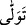
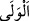
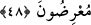

olduğu halde “Falan oğulları falanı öldürdü.” denir.
“Ondan sonra da içlerinden” bu sözü söyleyenlerden “bir gurup, bundan” yâni bu
sözü söyledikten sonra O’nun hükmünü kabûlden “ yüz çeviriyor.”
İmam Râgıb der ki: “
” fiili kendiliğinden geçişli yapılırsa velâyet (dostluk)
mânâsını gerektirir ve dostluk en yakın yerlerde husûle gelir. Açıktan veya takdirî
olarak “ ” harfiyle geçişli yapılırsa yüz çevirme ve yakınlığı terk etme mânâsını
gerektirir. Çünkü “
” yakın demektir. Yüz çevirmek bazen cismen, bazen de kulak
vermeyi ve emirlere uymayı terk etmekle olur.
“ (sonra)” kelimesinin, bir yönden zaman bakımından gecikmeyi, diğer yönden de
onların “inandık ve itâat ettik” dedikten sonra yüz çevirmelerini uzak görmeyi ifâde
eder.
el-Müfredât’ta der ki: “
” ayrılmış parça, kısım demektir. İnsanlardan ayrı bir
topluluk için “fırka” kelimesi de buradandır. “
” de başkalarından ayrılmış bir grup
anlamındadır.
“Bunlar” yukarıdaki sözü söyleyen kimseler gerçekten “inanmış değillerdir.” Çünkü
yukarıdaki sözü söyleyenlerden îmânı kaldırmak, yüz çeviren guruptan da îmânı
kaldırmayı gerekli kılar. Fakat bunun aksi geçerli değildir. Yâni îman ve itâat iddiâsında
bulunan, sonra da îtikad ve amelde kendileri ile müşterek olanlardan bir kısmı yüz
çeviren bu kimseler, îman bakımından samîmî ve sebatkâr olarak bilinen mü’minler
değillerdir.
48. Onlar, aralarında hüküm vermesi için Allah’a ve Peygamber’e
çağırıldıklarında, bakarsın ki içlerinden bir kısmı yüz çevirip dönerler.
“Onlar aralarında hüküm vermesi için Allah’a ve Peygamber’ine” yâni Rasûlullah
(s.a.)’e “çağrıldıklarında” Çünkü her ne kadar hüküm Allah’ın hükmü olsa da gerçekte
o hükmü yürürlüğe koyacak olan Rasûlullah (s.a.)’dir. Burada Allah’ın zikredilmesi,
Peygamberimiz (s.a.)’in şânını yüceltmek ve onun Allah katındaki yerinin büyüklüğünü
bildirmek içindir.
Bir şey hakkında hükmetmek, başkasını bağlasın veya bağlamasın, onun şöyle
olduğuna ve böyle olmadığına karar vermektir.
“Bakarsın ki içlerinden bir kısmı yüz çevirip dönerler.” Hemen onlardan bir gurup,
gerçek hüküm aleyhlerine olacağı için, Hz. Peygamber (s.a.)’in haklarında doğru olarak
hükmedeceğini ve rüşvet kabûl etmeyeceğini bildiklerinden dolayı O’nun huzûrunda
muhâkeme olmaktan yüz çevirirler.